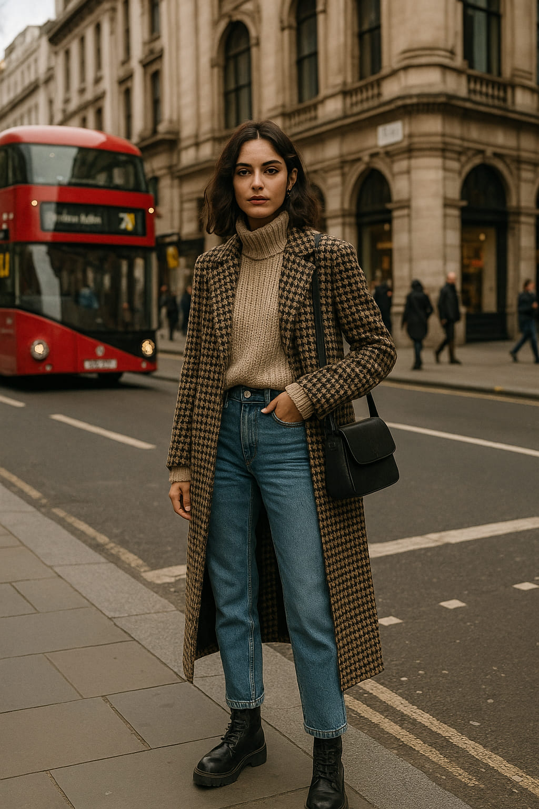
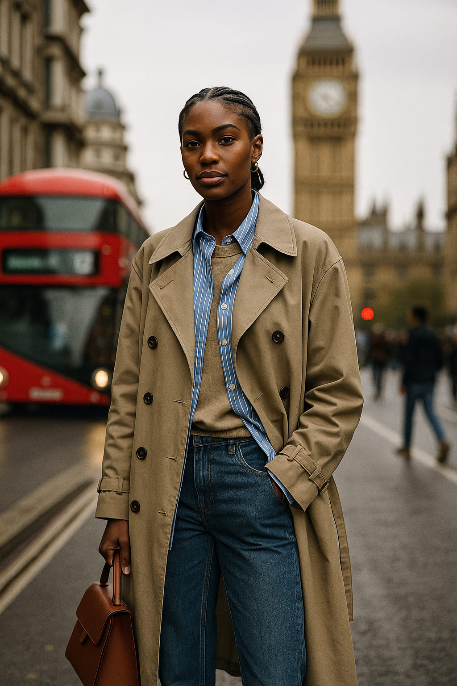
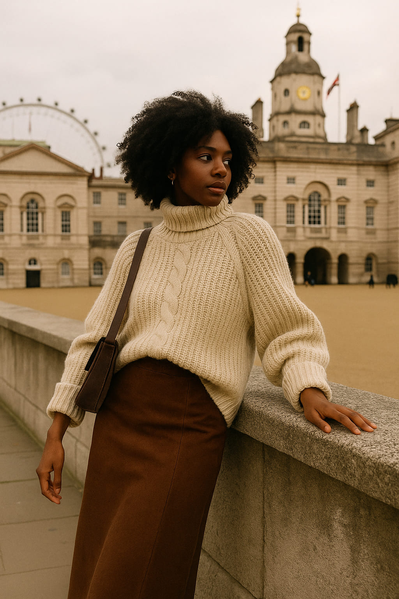
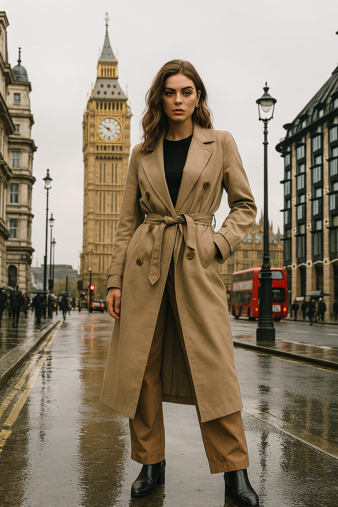

London Street Code: Outfit Inspiration from the Capital’s Cobbled Catwalks
From punk rebellion to Savile Row elegance, London is not just a city — it's a style manifesto walking on cobblestones. Whether you’re strolling through Shoreditch or taking tea in Kensington, this city serves one of the world’s richest palettes of streetwear, tailored charm, and cultural layering. Welcome to the street style editorial that’s as textured as the city itself.
The DNA of London Fashion
London fashion thrives on contrast. It’s polished and punk, raw and refined — and it rarely asks for permission. The city’s fashion identity was forged by icons like Vivienne Westwood, the tailoring of Jermyn Street, and the multicultural mashup of Brixton and Camden. Each neighborhood contributes its voice, creating a style symphony where Burberry trenches meet Air Force 1s.
“London’s streets are runways where identity is worn louder than logos.”
Look 1: East London Layering
Start in Shoreditch, where vintage denim jackets are worn over graphic turtlenecks, paired with cropped cargos and secondhand boots. Layers are essential — both sartorial and symbolic. Here, it's not about buying new, but combining pieces that tell a personal story. Style here whispers rebellion with a well-worn edge.
Look 2: Soho Tailored Streetwear
In Soho, creative pros blur the line between formalwear and street. Think oversized wool coats thrown over tech-fleece, pleated trousers meeting platform sneakers. Accessories are minimal — a silver hoop, a leather satchel — allowing silhouette and color to do the talking. Monochrome dominates, with a surprising splash of neon here and there.
“It’s the confidence, not the clothes. In London, style is a language everyone speaks differently.” — Olivia Tan, British Vogue contributor
Look 3: North London Minimalism
In areas like Islington or Hampstead, the vibe turns clean and functional. Long camel coats, leather gloves, neutral knits, and pointed boots glide across Regent’s Park like a fashion editorial in motion. These looks are less about statement and more about structure. Elegance here is found in restraint.
Look 4: Camden’s Color Clash
And then, there’s Camden — still clinging to its rebellious roots with a splash of Gen Z color theory. We’re talking checkerboard skirts with bomber jackets, platform Docs, and hair dyed to match accessories. It's pure maximalism with attitude, and somehow, it works in only the way Camden can make it work.
Seasonal Swaps: How Londoners Adapt
- Spring: Trench coats, wide-leg trousers, and loafers with no-show socks.
- Summer: Linen coordinates, bucket hats, high-top trainers.
- Autumn: Blazers over hoodies, wool skirts, lug-sole boots.
- Winter: Oversized scarves, shearling jackets, layering galore.
Style Observed: The London Mix
It’s not one look, but many. A Nigerian fabric worn as a crop top in Hackney. A Burberry cap clashing with a Nike puffer in Brixton. A tech bro’s Patagonia fleece worn unironically at Pret. All these contradictions make the city unpredictable — and unmissable for any style hunter.
Final Thoughts: Dressing for the Unexpected
If there’s one takeaway from the streets of London, it’s this: don’t aim to fit in. In fact, the best style moments happen when you try something that feels just outside your comfort zone. As always, let the city guide you — from Notting Hill to Southbank, every corner has a lesson in contrast and creativity.
Words by Style Atlas